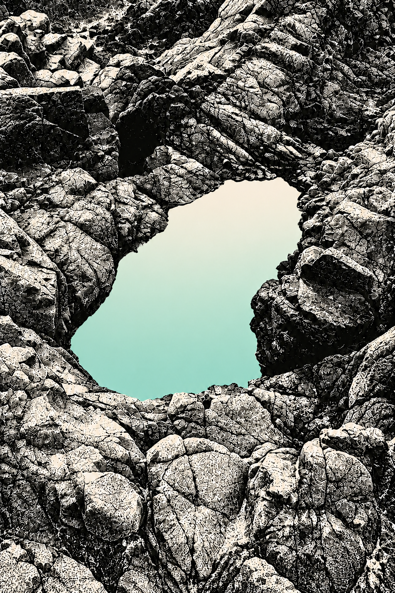
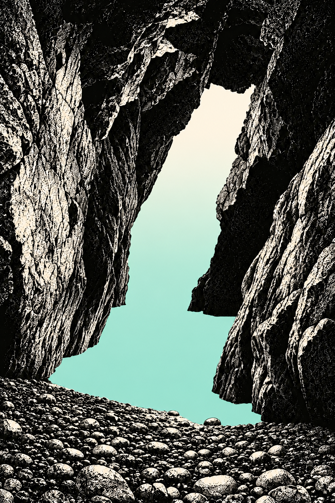
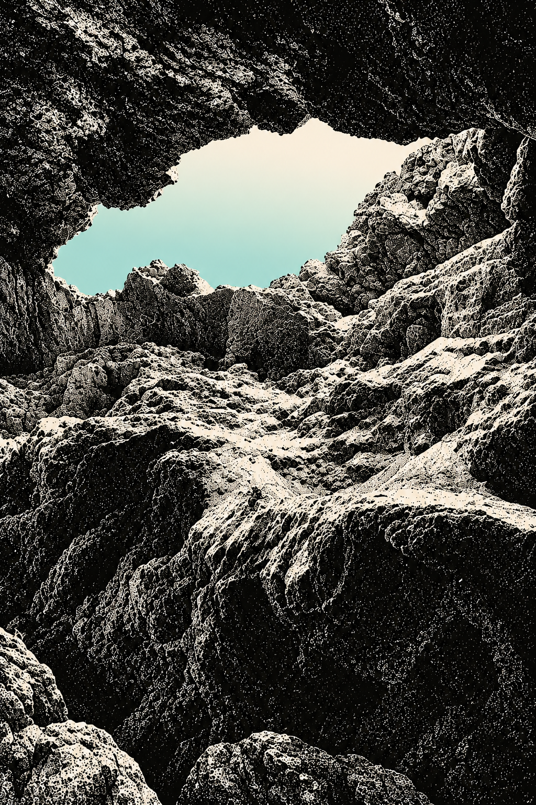
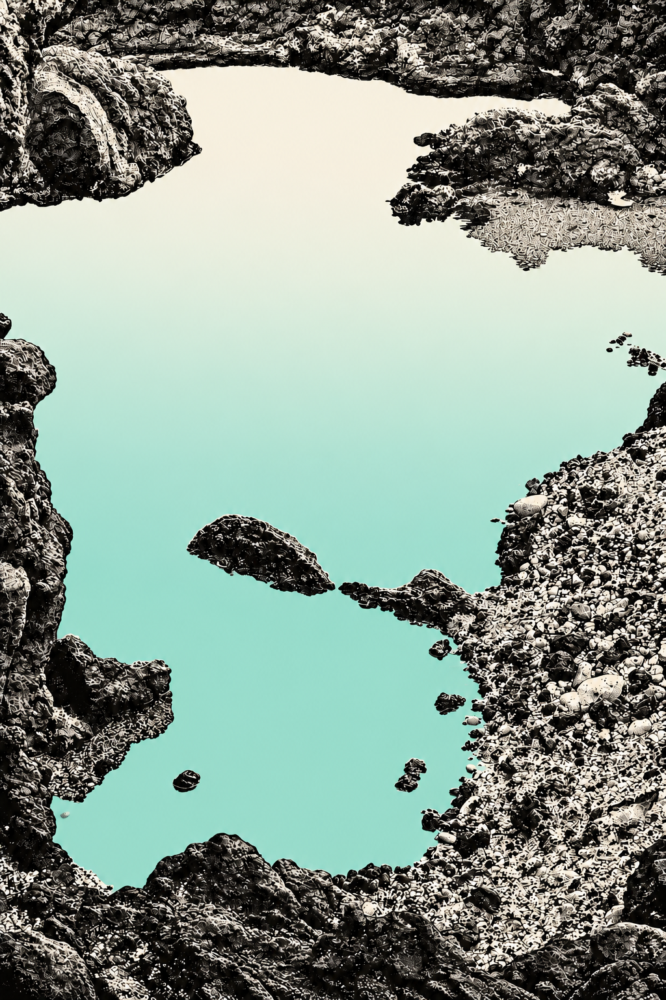
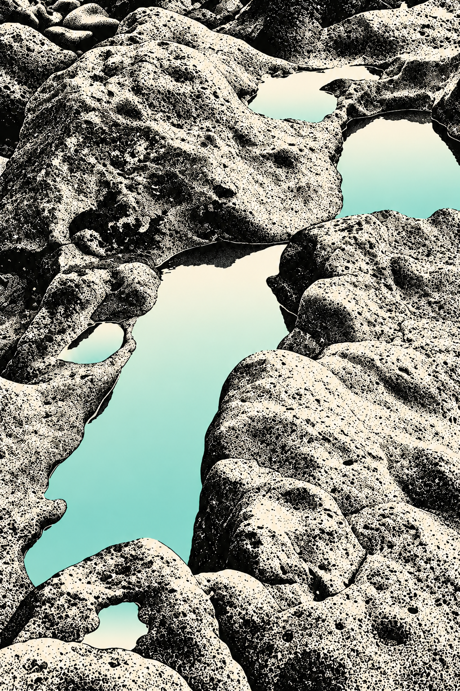

Stipple. Space. Colour.
Five separate terrain illustrations. Black/off-white geology surrounds opaque aquamarine-to-off-white gradient fields. No text or branding in the artwork.










Five separate terrain illustrations. Black/off-white geology surrounds opaque aquamarine-to-off-white gradient fields. No text or branding in the artwork.




